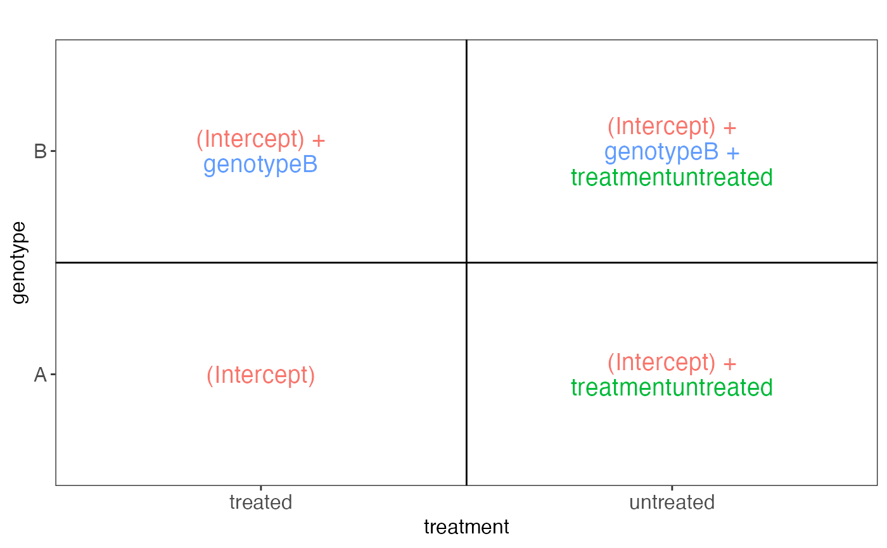

Given a sample table and a design formula, generate a collection of
static plots for exploring the resulting design matrix graphically.
This function is called internally by ExploreModelMatrix(), but
can also be used directly if interactivity is not required.
VisualizeDesign(
sampleData,
designFormula = NULL,
flipCoordFitted = FALSE,
flipCoordCoocc = FALSE,
textSizeFitted = 5,
textSizeCoocc = 5,
textSizeLabsFitted = 12,
textSizeLabsCoocc = 12,
lineWidthFitted = 25,
addColorFitted = TRUE,
colorPaletteFitted = scales::hue_pal(),
dropCols = NULL,
designMatrix = NULL
)A data.frame of DataFrame with sample
information.
A formula. All components of the terms must be
present as columns in sampleData.
A logical, whether to flip the
coordinate axes in the fitted values/co-occurrence plot, respectively.
A numeric scalar giving the text
size in the fitted values/co-occurrence plot, respectively.
A numeric scalar giving
the text size for the axis labels in the fitted values/co-occurrence plot,
respectively.
A numeric scalar giving the maximal length of a
row in the fitted values plot, before it is split and printed on multiple
lines
A logical scalar indicating whether the terms
in the fitted values plot should be shown in different colors.
A function returning a color palette to use
for coloring the model coefficients in the fitted values plot.
A character vector with columns to drop from the design matrix, or NULL if no columns should be dropped.
A numeric matrix, which can be supplied as an
alternative to designFormula. Rows must be in the same order as
the rows in sampleData.
A list with the following elements:
sampledata: A data.frame, expanded from the input
sampleData
plotlist: A list of plots, displaying the fitted values for
each combination of predictor values, in terms of the model coefficients.
designmatrix: The design matrix, after removing any columns in
dropCols
pseudoinverse: The pseudoinverse of the design matrix
vifs: A data.frame with calculated variance inflation
factors
colors: A vector with colors to use for different model
coefficients
cooccurrenceplots: A list of plots, displaying the
co-occurrence pattern for the predictors (i.e., the number of observations
for each combination of predictor values)
totnbrrows: The total number of "rows" in the list of plots
of fiitted values. Useful for deciding the required size of the plot canvas.
Note that if a design matrix is supplied (via the designMatrix
argument), caution is required in order to interpret especially the
cooccurrence plot in the situation where the provided sampleData
contains additional columns not used to generate the design matrix (or
when it does not contain all the relevant columns).
VisualizeDesign(
sampleData = data.frame(genotype = rep(c("A", "B"), each = 4),
treatment = rep(c("treated", "untreated"), 4)),
designFormula = ~genotype + treatment
)
#> $sampledata
#> genotype treatment value nSamples
#> 1 A treated (Intercept) 2
#> 2 A untreated (Intercept) + treatmentuntreated 2
#> 3 B treated (Intercept) + genotypeB 2
#> 4 B untreated (Intercept) + genotypeB + treatmentuntreated 2
#>
#> $plotlist
#> $plotlist[[1]]

#>
#>
#> $designmatrix
#> (Intercept) genotypeB treatmentuntreated
#> 1 1 0 0
#> 2 1 0 1
#> 3 1 0 0
#> 4 1 0 1
#> 5 1 1 0
#> 6 1 1 1
#> 7 1 1 0
#> 8 1 1 1
#>
#> $pseudoinverse
#> 1 2 3 4 5 6 7 8
#> (Intercept) 0.375 0.125 0.375 0.125 0.125 -0.125 0.125 -0.125
#> genotypeB -0.250 -0.250 -0.250 -0.250 0.250 0.250 0.250 0.250
#> treatmentuntreated -0.250 0.250 -0.250 0.250 -0.250 0.250 -0.250 0.250
#>
#> $vifs
#> coefficient vif
#> 1 genotypeB 1
#> 2 treatmentuntreated 1
#>
#> $colors
#> (Intercept) treatmentuntreated genotypeB
#> "#F8766D" "#00BA38" "#619CFF"
#>
#> $cooccurrenceplots
#> $cooccurrenceplots[[1]]
#>
#>
#> $totnbrrows
#> [1] 2
#>